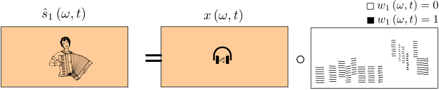
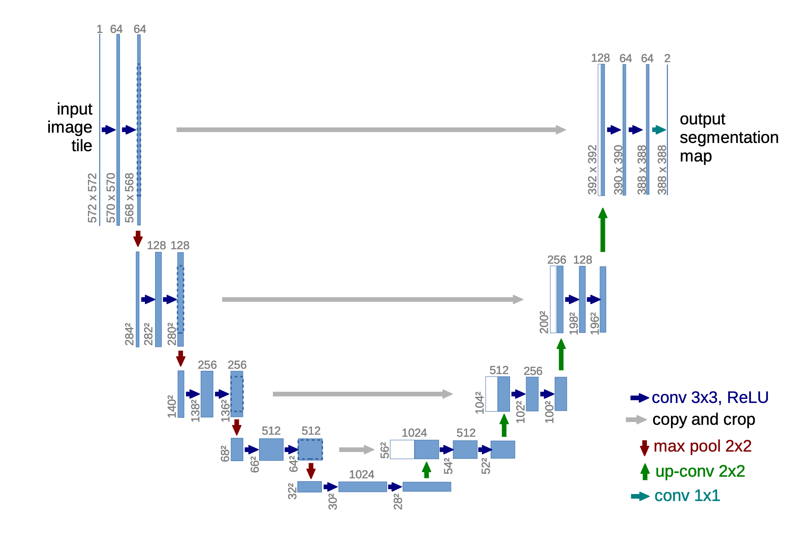

Music Source Separation
✉️ fabian@audioshake.ai
we need...
Agenda
About myself
Music Unmixing/Separation
Music Unmixing/Separation
Music Unmixing/Separation
Applications

Task definition

Inverse Problem
Classical approach: an inverse problem

Music separation as a machine learning problem
Generative or discriminative

Music separation as a machine learning problem
Classification ...

Binary Masking
... or regression ?

Softmask

Magnitude Spectrogram
Music separation as a machine learning problem
Supervised ...
... or unsupervised ? (open direction)
Music separation as a machine learning problem
Modeling fixed-sized spectrograms ... ?
... or learning dynamic models ?
Mixture spectrogram
Vocals spectrogram
Drums spectrogram
Bass spectrogram
Basic Separation Architectures
Why is it a challenging problem for deep learning

Basic recipe
Basic model: Separating auto-encoder
Basic Encoder: Fixed time frequency representations

A Baseline System
Pre-Processing
Training Dataset: MUSDB18
MUSDB18) and uncompressed WAV MUSDB18-HQ


A Baseline System
Sampling for Training

Loss functions
Demo: https://www.sisec17.audiolabs-erlangen.de/#/listen/34/UHL1
Recurrent Model, learning longer term structure
Spectrogram Architectures
Open-Unmix Baseline

Open-Unmix Baseline

Open-Unmix Baseline

The pytorch
Open-unmix (UMX) model
The pytorch
Open-unmix (UMX) model
F. Stöter et al, "Open-Unmix - A reference implementation for audio source separation", JOSS 2019.
Evaluation

Discussion
Convolutional Encoder/Decoder?
Convolutional Neural Networks
Typical ConvNet for Audio

Segmentation (=Separation?)
ConvNet for Audio-to-audio
How to design upsampling network
Upsampling

upsampled convolutions?
✍️
Fully convolutional network (FCN)

U-net

Main contribution: Skip connection

Spectrogram U-net
Details
Open-Unmix vs. Spleeter vs. ConvtasNet vs. Demucs.
Are upsampled convolution safe for audio?
✍️
Upsampled Convolution
2D upsampled Convolution
Issues with audio upsampling
Music separation vs. Speech Separation
...in typical applications
üé§ Speech
üéπ Music
sample rate
4000-16000 kHz
>=44100 kHz
typical signal length
seconds
minutes
# sources
1 to 4
1 to 20
# channels
1
2
permutation
variant
fixed
Mixing model
linear/convolutive
non-linear
Degradations
noise, reverberation
distortion, compression
Issues with magnitude spectrograms
Solution 1: complex spectrograms
Solution 2: learnable transform - Conv-Tasnet (SOTA for speech separation)
Demo: Spectrogram vs time domain
Trends
Is the problem solved?
Music Demixing Challenge
https://www.aicrowd.com/challenges/music-demixing-challenge-ismir-2021
Ressources